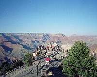
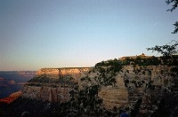
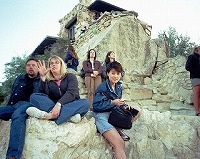
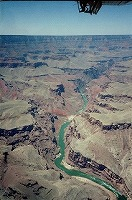
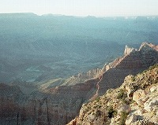
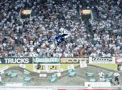

 |
シャトルバスで回りながら、暑い中、まったりと観光することになる。サウスリム崖っぷちで写真を撮ったりする人々。
車椅子の傾けの設備もしっかりしていたし、実際に利用する観光客も多い。 |
| 夕陽は西から射すので東側斜面を照らす。昼間は、みんなすすけてつまらない色をしているが、このときはとっても綺麗。
建物はBright Angel Lodge。 |
 |
 |
みんなで適当な岩に腰掛けて夕陽を待つことになる。ロッジの予約は込んでいるが、観光はそんなに混み混みではない。(ツアーで行くと瞬間的な人口密度はかなり高いと思われる)
上に見える小屋は、書籍を販売するお土産屋。 |
| 朝日を待つ間は辺りも暗く、むちゃくちゃ寒い！朝日は西斜面を照らす。ずっとこのような景色ばかり見ていると飽きてくる。夕陽と対して変わらない。
小屋は前述書籍屋。 |
 |
|
 |
飛行機から見たコロラド川。茶色い台地の中にぽっかりエメラルド色の綺麗な川に珍しく感動。 |
| 谷あいに見えるコロラド川。 |  |
 |
ラスベガスに戻ったら、丁度スーパークロスの最終戦をやっていたので観戦。バイクが飛んでいる。
今にして思えば、これが最後のマクグラスチャンピョンだったかな？ |